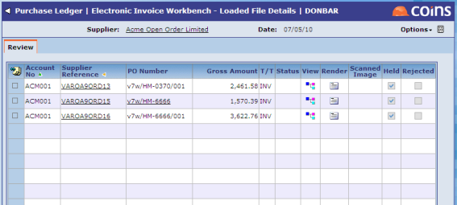
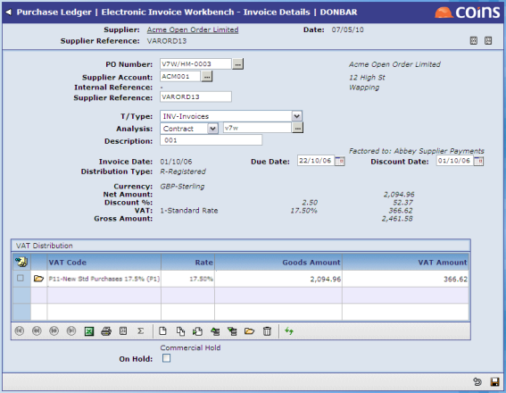
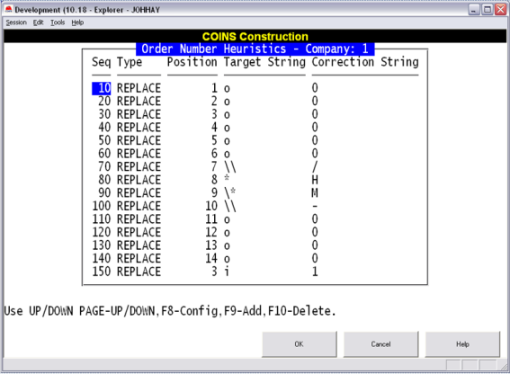

The workbench can recogn

The workbench can recogn
Having decided what the order number should look like the workbench then looks for another / character. If one is found then the workbench assumes that any characters after this are a WBS code. For example, M-v7w/0001/001 will be parsed as order number M-v7w/0001 and WBS code 001. If the order number is found in the
In the example below, the PO number format is set to Contract/Prefix/OrderNumber. The invoice comes in with an order number v7w/HM/0003/001. V7w/HM/0003 is a valid committed order so the workbench has removed the ending /001 and put it into the description.

You can set rules that will endeavour to auto-correct any typing errors the

Here we replace any letter O (upper or lower case) in the first six characters or eleventh to fourteenth characters of the order number with the number 0 (zero). Use the wildcard character * to represent "any character"; the eighth character will always be replaced by the letter H. Use \ to "escape" special characters \ and *. The \ on line 90 stops the * character from acting as a wildcard; only if the 9th character is a * will it be replaced by M. If we find a \ as the seventh character we replace it with the / character.